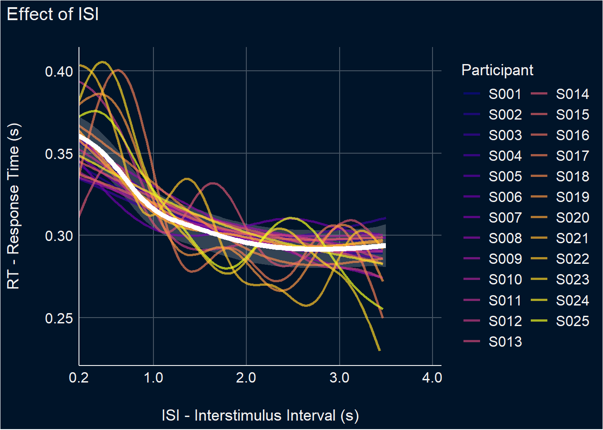
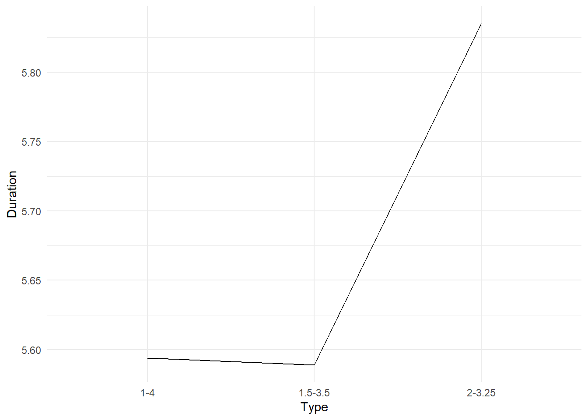
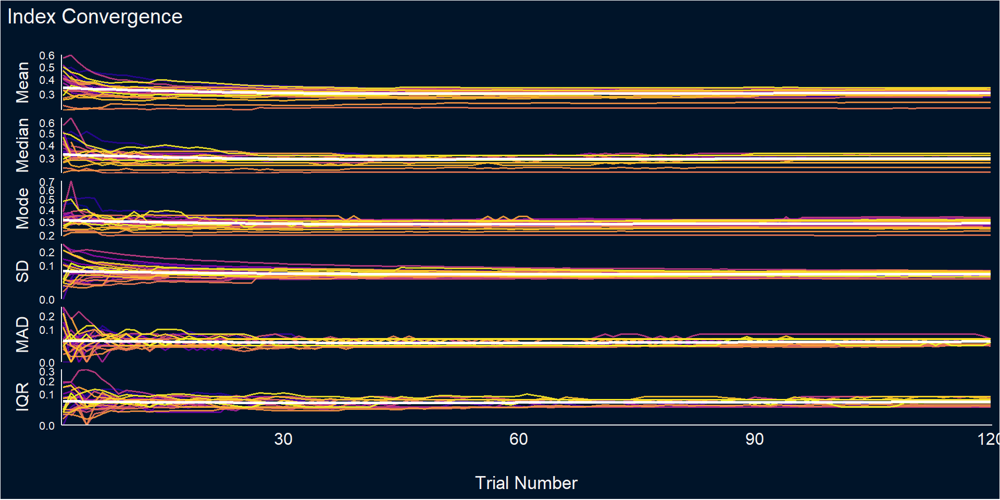
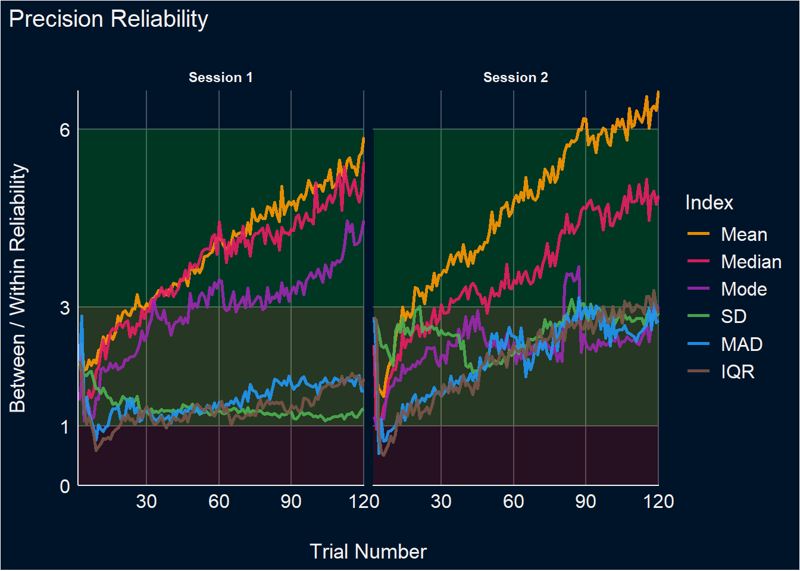
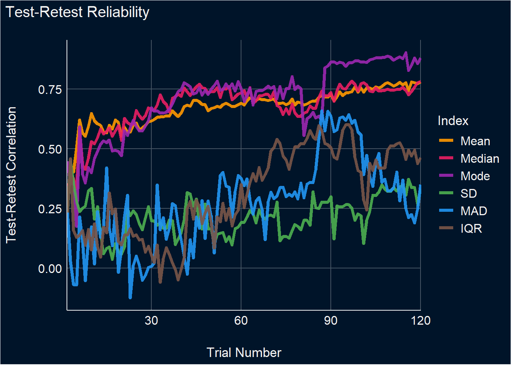
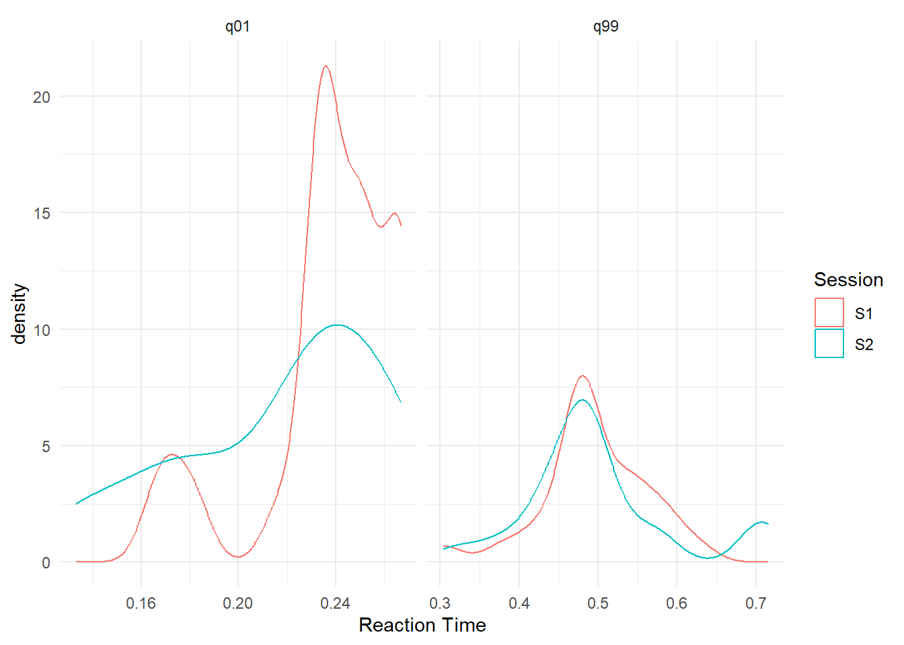
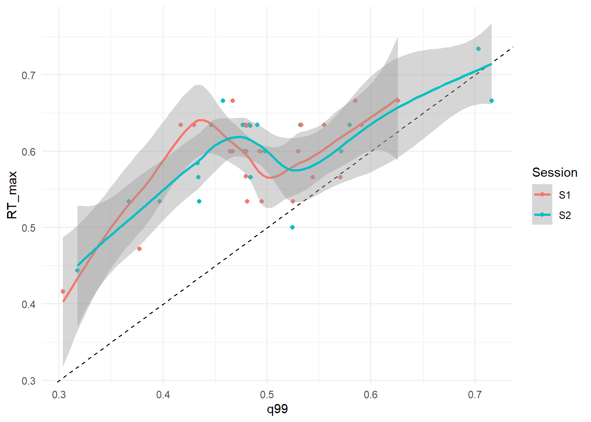
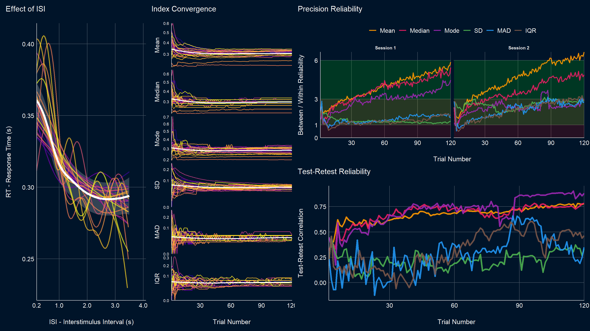

Code
library(tidyverse)
library(easystats)
library(patchwork)
library(ggside)library(tidyverse)
library(easystats)
library(patchwork)
library(ggside)dfsub <- read.csv("../data/data_participants.csv")
df <- read.csv("../data/data_game.csv") |>
mutate(Participant = as.factor(Participant))m <- mgcv::gamm(RT ~ s(ISI), random=list(Participant=~1), data=df)
m_ppt <- mgcv::gam(RT ~ s(ISI, by=Participant), data=df)
p1 <- modelbased::estimate_relation(m, length=100, include_random = FALSE) |>
ggplot(aes(x = ISI, y = Predicted)) +
geom_ribbon(aes(ymin = CI_low, ymax = CI_high), alpha = 0.2, fill="white") +
geom_line(data=modelbased::estimate_relation(m_ppt, length=100), aes(color=Participant), linewidth=1, alpha=0.7) +
geom_line(linewidth=2, color="white") +
# geom_hline(yintercept = 0.325, linetype = "dashed") +
# geom_vline(xintercept = c(1, 4), linetype = "dashed", color="red") +
scale_x_continuous(expand = c(0, 0), breaks=c(0.2, 1, 2, 3, 4)) +
scale_color_viridis_d(option="plasma") +
theme_abyss() +
coord_cartesian(xlim = c(0.2, 4.1)) +
labs(y = "RT - Response Time (s)", x = "ISI - Interstimulus Interval (s)",
title = "Effect of ISI")
p1 
dat <- rbind(
data.frame(ISI = seq(1, 4, length.out = max(df$Trial)), Type = "1-4"),
data.frame(ISI = seq(1.5, 3.5, length.out = max(df$Trial)), Type = "1.5-3.5"),
data.frame(ISI = seq(2, 3.25, length.out = max(df$Trial)), Type = "2-3.25")
)
dat$RT <- insight::get_predicted(m, dat, include_random = FALSE)
dat$Duration <- (dat$RT + dat$ISI)
dat |>
group_by(Type) |>
summarise(Duration = sum(Duration) / 60 ) |>
ggplot(aes(x=Type, y=Duration)) +
geom_line(aes(group=1)) +
theme_minimal()
get_indices <- function(rt=df$RT, suffix="") {
x <- data.frame(
Mean = mean(rt),
Median = median(rt),
Mode = suppressWarnings(modeest::mlv(rt, method="meanshift")),
SD = sd(rt),
MAD = mad(rt),
IQR = IQR(rt)
)
setNames(x, paste0(names(x), suffix))
}
bootstrapped_ci <- function(rt=df$RT, iter) {
rez <- data.frame()
for(i in 1:iter) {
new_rt <- rt[sample(1:length(rt), length(rt), replace=TRUE)]
rez <- rbind(rez, get_indices(new_rt))
}
out <- as.data.frame(sapply(rez, function(x) quantile(x, c(0.05, 0.95)), simplify=FALSE))
out <- rbind(out, sapply(rez, sd))
out$Index <- c("Min", "Max", "SD")
pivot_wider(out, names_from = Index, values_from = -Index)
}
# This takes time.
dfstability <- data.frame()
for(p in unique(df$Participant)) {
for(s in unique(df$Session)) {
cat("-")
ppt <- df[df$Participant == p & df$Session == s, ]
truth <- get_indices(ppt$RT, suffix="_Truth")
for(i in tail(sort(ppt$Trial), -1)) {
rt <- ppt[ppt$Trial <= i, "RT"]
dat <- cbind(
data.frame(Participant = p, Session = s, Trial = i),
get_indices(rt, "_Cumulative"),
bootstrapped_ci(rt, iter=50),
truth
)
dfstability <- rbind(dfstability, dat)
}
}
}Registered S3 method overwritten by 'statip':
method from
predict.kmeans parametersdat <- dfstability |>
pivot_longer(cols = -c(Participant, Session, Trial), names_to = "Index", values_to = "Value") |>
separate(Index, into = c("Index", "Type"), sep = "_") |>
pivot_wider(names_from = Type, values_from = Value) |>
mutate(Diff = Cumulative - Truth,
Diff_Min = Min - Truth,
Diff_Max = Max - Truth)
p2 <- dat |>
filter(Session == "S1") |>
mutate(Index = fct_relevel(Index, "Mean", "Median", "Mode", "SD", "MAD", "IQR")) |>
ggplot(aes(x=Trial, y=Cumulative)) +
# geom_hline(yintercept = 0, linetype = "dashed") +
# geom_ribbon(aes(ymin = Min, ymax = Max, fill=Participant), alpha = 0.2) +
geom_line(aes(color=Participant), linewidth=0.7, alpha=0.9) +
geom_smooth(method = 'loess', formula = 'y ~ x', se=FALSE, color="white", linewidth=1) +
facet_grid(Index~., scales="free_y", switch="y") +
theme_minimal() +
scale_color_viridis_d(option="plasma", guide="none") +
scale_fill_viridis_d(option="plasma", guide="none") +
scale_x_continuous(expand=c(0, 0.2)) +
scale_y_sqrt(expand=c(0, 0)) +
theme_abyss() +
theme(strip.placement = "outside",
strip.text = element_text(size = 12, face="plain"),
axis.text.y = element_text(size=8),
panel.grid.major = element_blank()) +
labs(y=NULL, x="Trial Number", title="Index Convergence")
p2
Reliability corresponds to the ratio of the variability of the between-participants point-estimates to the average within-participant variability.
dat <- dfstability |>
summarize(Mean_between = sd(Mean_Cumulative),
Mean_within = mean(Mean_SD),
Mean_Reliability = Mean_between / Mean_within,
Median_between = sd(Median_Cumulative),
Median_within = mean(Median_SD),
Median_Reliability = Median_between / Median_within,
Mode_between = sd(Mode_Cumulative),
Mode_within = mean(Mode_SD),
Mode_Reliability = Mode_between / Mode_within,
SD_between = sd(SD_Cumulative),
SD_within = mean(SD_SD),
SD_Reliability = SD_between / SD_within,
MAD_between = sd(MAD_Cumulative),
MAD_within = mean(MAD_SD),
MAD_Reliability = MAD_between / MAD_within,
IQR_between = sd(IQR_Cumulative),
IQR_within = mean(IQR_SD),
IQR_Reliability = IQR_between / IQR_within,
.by=c(Session, Trial)) |>
pivot_longer(ends_with("Reliability"), names_to="Index", values_to="Reliability") |>
mutate(Index = str_remove(Index, "_Reliability"),
Index = fct_relevel(Index, "Mean", "Median", "Mode", "SD", "MAD", "IQR"),
Session = ifelse(Session == "S1", "Session 1", "Session 2"))
p3 <- dat |>
ggplot(aes(x=Trial, y=Reliability)) +
geom_area(aes(y=1), fill="red", alpha=0.15) +
geom_ribbon(aes(ymin=1, ymax=3), fill="yellow", alpha=0.15) +
geom_ribbon(aes(ymin=3, ymax=6), fill="green", alpha=0.15) +
geom_line(aes(color=Index), linewidth=1, alpha=0.9) +
facet_grid(~Session, scales="free_y") +
scale_color_manual(values=c("Mean"="#FF9800", "Median"="#E91E63", "Mode"="#9C27B0",
"SD"="#4CAF50", "MAD"="#2196F3", "IQR"="#795548")) +
scale_x_continuous(expand=c(0, 0.1)) +
scale_y_continuous(expand=c(0, 0), breaks=c(0, 1, 3, 6)) +
theme_abyss() +
labs(title = "Precision Reliability", y="Between / Within Reliability", x="Trial Number")
p3
p4 <- dfstability |>
pivot_longer(cols = ends_with("Cumulative"), names_to = "Index", values_to = "Value") |>
select(-ends_with("_SD"), -ends_with("_Min"), -ends_with("_Max"), -ends_with("_Truth")) |>
mutate(Index = str_remove(Index, "_Cumulative")) |>
pivot_wider(values_from="Value", names_from="Session") |>
summarize(r = cor(S1, S2, use = "pairwise.complete.obs"), .by=c(Index, Trial)) |>
mutate(Index = fct_relevel(Index, "Mean", "Median", "Mode", "SD", "MAD", "IQR")) |>
ggplot(aes(x=Trial, y=r)) +
geom_line(aes(color=Index), linewidth=1.5, alpha=0.9) +
theme_abyss() +
labs(title="Test-Retest Reliability", y="Test-Retest Correlation", x="Trial Number") +
scale_color_manual(values=c("Mean"="#FF9800", "Median"="#E91E63", "Mode"="#9C27B0",
"SD"="#4CAF50", "MAD"="#2196F3", "IQR"="#795548")) +
scale_x_continuous(expand=c(0, 0.1))
p4
dat <- df |>
summarize(Median = median(RT),
q01 = quantile(RT, probs=0.01),
q99 = quantile(RT, probs=0.99),
.by=c("Participant", "Session")) |>
mutate(RT_max = Median*2)
dat |>
pivot_longer(cols=c(q01, q99)) |>
ggplot(aes(x=value, color=Session)) +
geom_density() +
facet_grid(~name, scales="free") +
labs(x = "Reaction Time") +
theme_minimal()
dat |>
ggplot(aes(x=q99, y=RT_max, color=Session )) +
geom_abline(intercept = 0, slope = 1, linetype="dashed") +
geom_point() +
geom_smooth() +
theme_minimal() `geom_smooth()` using method = 'loess' and formula = 'y ~ x'
PA <- p1 + theme(legend.position = "none", plot.background = element_rect(fill = "#001429", color = "#001429"))
PB <- p2 + theme(legend.position = "none", plot.background = element_rect(fill = "#001429", color = "#001429"))
PC1 <- p3 + guides(colour = guide_legend(nrow = 1)) + theme(legend.position = "top",
legend.title = element_blank(),
plot.background = element_rect(fill = "#001429", color = "#001429"))
PC2 <- p4 + theme(legend.position = "none", plot.background = element_rect(fill = "#001429", color = "#001429"))
(cowplot::plot_grid(PA, PB) | cowplot::plot_grid(PC1, PC2, ncol=1)) +
patchwork::plot_annotation(theme = theme(plot.background = element_rect(fill = "#001429", color = "#001429")))